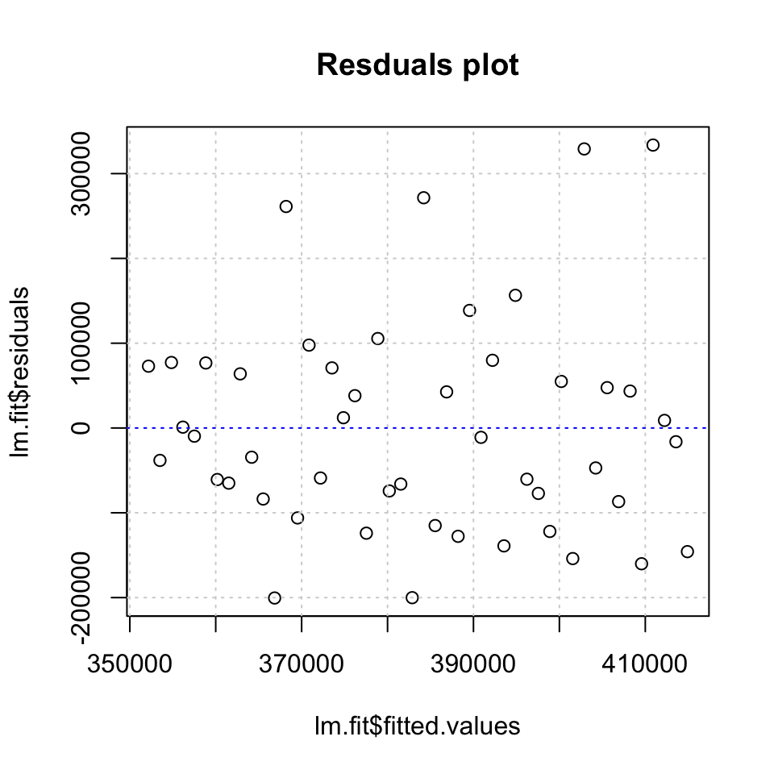
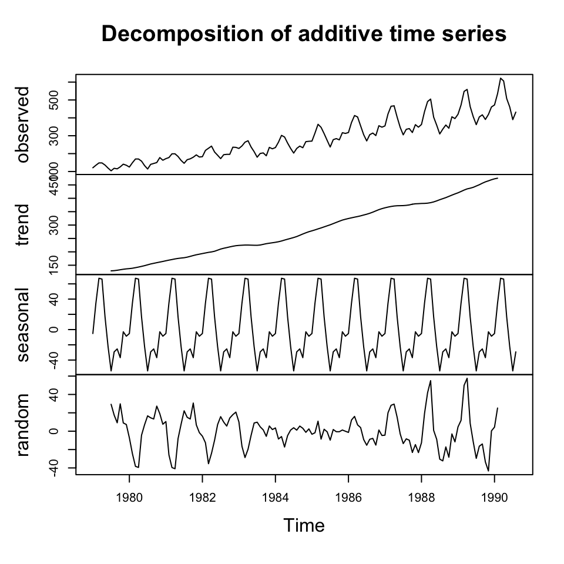

7.5 Exercises - ARIMA
7.5.1 IBM stock, problem 12 p 405
Qa
The data in Table P-12 are weekly prices for IBM stock.
#Loading
y <- read_excel("Data/Week47/IBMstock.xls") %>% ts(frequency = 52)
#Plotting
ts.plot(y)Figure 7.1: IBM stock prices
It is dififult to say if there is a trend, but there appear to be seasons. This can be futher expected with the correlogram
acf(x = y
,lag.max = 52) #We take for a whole year
Figure 7.2: Correlogram (acf) IBM Stock prices
The correlogram suggests that there is seasonality in the data. We only have data for one year, hence 52 periods. It would be interesting to see if the patterns express it self over years.
We could also express the pacf.
The partial correlation coefficient is estimated by fitting autoregressive models of successively higher orders up to lag.max.
pacf(x = y
,lag.max = 52) #We take for a whole yearFigure 7.3: Correlogram (pacf) IBM Stock prices
What approaches does this suggest?
It suggests, that we should use an AR model, as the acf is tending towards 0 while the pacf quickly drops to 0.
Qb
Looking at the ts plot, the data does not appear to be stationary. Perhaps there is a small indication of a trend in the data, hence not constant variance around a fixed point.
It therefore suggests that we move into ARIMA, where we apply d order differencing.
Qc
We apply AR and d, where we first try with first order, to assess if it is sufficient.
p <- 0 #AR order
d <- 1 #Differencing order
q <- 0 #MA order
order <- c(p,d,q)
ARIMAmod <- arima(x = y #The time-series
,order = order
)
#Assessing in-samp accuracy
accuracy(object = fitted(ARIMAmod)
,x = y)## ME RMSE MAE MPE MAPE ACF1 Theil's U
## Test set 0.7166731 6.090774 4.793596 0.2270925 1.759575 0.2971583 1We see an mean percentage error of 1,64%. That is quite low. But also expected as it is in sample.
plot(ARIMAmod$residuals,ylab = "Residuals")Figure 7.4: Residuals plot IBM stock ARIMA 1,1,0
The changes appear to be randomly distributed around 0.
Qd
Perform diagnostic checks to determine the adequacy of your fitted model
Residuals to be random
We see from the residuals plot above. It was difficult to get rid of heteroskedasticity
Note, it was tested with only differencing, and appear to have a more constant variance with this
but we still see something indicating that the variance is not entirely constant
Constant variance
This can also be checked using a Ljung-Box test, where the null hypothesis is that there is no relationship between the observations.
Box.test(ARIMAmod$residuals
,fitdf = p+q) #Because it is applied to and ARIMA model##
## Box-Pierce test
##
## data: ARIMAmod$residuals
## X-squared = 4.5918, df = 1, p-value = 0.03213We see that the p-value is below the p-value (5%), hence the model is under misspecification. Although we are close to the threshold, let us assume that it is sufficient.
Autocorrelation in residuals
We see that the errors appear not to show autocorrelation. Although there is one period, that does appear to have a spike + the first lagged period, but it is close to the recommended threshold.
acf(ARIMAmod$residuals)
Then one could test other models and see if they perform better. I have been playing around with the orders, but it does not appear to help with the residuals.
Qd
Make forecast for the stock price in week 1.
{
forecast(object = ARIMAmod,h = 1) %>% print()
y[nrow(y),] %>% print()
}## Point Forecast Lo 80 Hi 80 Lo 95 Hi 95
## 2 304 296.1184 311.8816 291.9461 316.0539
## IBM
## 304We see that the forecast is 311,73 where the naive forecast (the most recent period) would just say 304.
Although one must be very precautions, as it was found that the model is under misspecification
rm(list = ls())7.5.2 Demand data, problem 7 p 403
Loading the data
df <- read_excel("Data/Week47/Demand.xls")
y <- ts(data = df,frequency = 52)Qa
Plotting acf
acf(y,lag.max = 52)
Figure 7.5: acf Demand
We see that there is clearly a trend and it appears as if we have seasons, although looking at it does not appear as if we have seasons.
We can support this with a pacf
pacf(y)
We are able to use an autoregressive approach as acf tends towards 0 and pacf quickly drops to 0.
Lastly we can check for stationarity.
ts.plot(y)Figure 7.6: Demand time-series
We observe non stationary data, hence we should apply differencing as well.
Qb
Manually doing ARIMA
p = 1
d = 1
q = 0
order <- c(p,d,q)
ARIMAmod <- arima(x = y
,order = order)
plot(ARIMAmod$residuals)
Figure 7.7: Residuals ARIMA
Auto ARIMA
We are also able to apply auto.arima() to find the most optimal combination based on the sample data.
# Making the model
ts.arima <- auto.arima(y = y)
summary(ts.arima)## Series: y
## ARIMA(2,1,1) with drift
##
## Coefficients:
## ar1 ar2 ma1 drift
## -0.3531 -0.4859 -0.8662 0.7106
## s.e. 0.1461 0.1399 0.1214 0.0101
##
## sigma^2 estimated as 0.7302: log likelihood=-63.77
## AIC=137.54 AICc=138.87 BIC=147.2
##
## Training set error measures:
## ME RMSE MAE MPE MAPE MASE
## Training set -0.04310129 0.8124002 0.6510066 -0.2215986 1.820533 NaN
## ACF1
## Training set 0.005108341We see that the this suggest a full ARIMA model with 2 order AR, 1 order differencing and 1 order MA.
Now we can display the residuals to check for independence within the error terms.
tsdisplay(ts.arima$residuals)Figure 7.8: Residuals time-series demand
It appears as if with have independence in the residuals and also none significant spikes in the correlograms.
We can make a statistical check for this as well, using the Box-Pierce test
Box.test(ts.arima$residuals)##
## Box-Pierce test
##
## data: ts.arima$residuals
## X-squared = 0.0013569, df = 1, p-value = 0.9706We see that we cannot reject the null hypothesis, hence it is fair to assume that the observations are independent of each other.
Qc
equation for forecast:
Cant find the constant, but one can call the coefficients with the following:
ts.arima[["coef"]]## ar1 ar2 ma1 drift
## -0.3530653 -0.4859323 -0.8662332 0.7105675Qd
Forecasting demand for the coming four periods. That can be done using forecast() where h = 4
arima.fh4 <- forecast(ts.arima
,h = 4 #Forecast horizon
,level = 0.95 #Confidence interval
)
knitr::kable(arima.fh4,caption = "Forecast with confidence intervals")| Point Forecast | Lo 95 | Hi 95 | |
|---|---|---|---|
| 2.000000 | 57.13051 | 55.45568 | 58.80534 |
| 2.019231 | 57.94525 | 56.23062 | 59.65988 |
| 2.038462 | 59.16331 | 57.38801 | 60.93861 |
| 2.057692 | 59.64408 | 57.78105 | 61.50711 |
plot(arima.fh4,xlim = c(1.8,2.2))
grid(col = "lightgrey")
rm(list = ls())7.5.3 Closing stock quotations, problem 13 p 409
df <- read_excel("Data/Week47/ClosingStockQuatations.xls")
y <- ts(df,frequency = 365)
y.train <- y[1:145]
y.test <- y[146:150]
ts.arima <- auto.arima(y.train)
tsdiag(ts.arima)
Figure 7.9: Diagnostics for ARIMA
We see that the residuals appear to be randomly distributed around a fixed point. Also there does not appear to be residuals that spikes, indicating autocorrelation in the residuals. Assessing the Ljung-Box statistic, we see that there are no values that go beyond the critical level of 5%. Hence it is fair to assume that the residuals are independent of each other.
arima.fh5 <- forecast(ts.arima,h = 5,level = 0.95)
knitr::kable(arima.fh5,caption = "Forecast with confidence level")| Point Forecast | Lo 95 | Hi 95 | |
|---|---|---|---|
| 146 | 133.8119 | 128.8361 | 138.7878 |
| 147 | 133.8119 | 128.6346 | 138.9893 |
| 148 | 133.8119 | 128.4407 | 139.1832 |
| 149 | 133.8119 | 128.2535 | 139.3704 |
| 150 | 133.8119 | 128.0724 | 139.5515 |
plot(arima.fh5,xlim = c(100,157))
grid(col = "lightgrey")Figure 7.10: Forecast Stock Quotations
accuracy(arima.fh5$mean,x = y.test)## ME RMSE MAE MPE MAPE
## Test set 2.508054 3.000656 2.508054 1.82561 1.82561We see that the accuracy is 2.5 MAE where the MAPE is 1.8
rm(list = ls())7.5.4 HW: Case 1 page 413-414 (q1-3)
Not done
7.5.5 HW: Case 4 page 417-419
Not done
7.5.6 Sales data seasonal
Not done
#Arima(y = y,model = #<insert fitted arima model here, to preserve coefficients>#)7.5.7 In class assignment
It is done somewhere. Otherwise, do it again